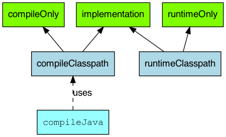
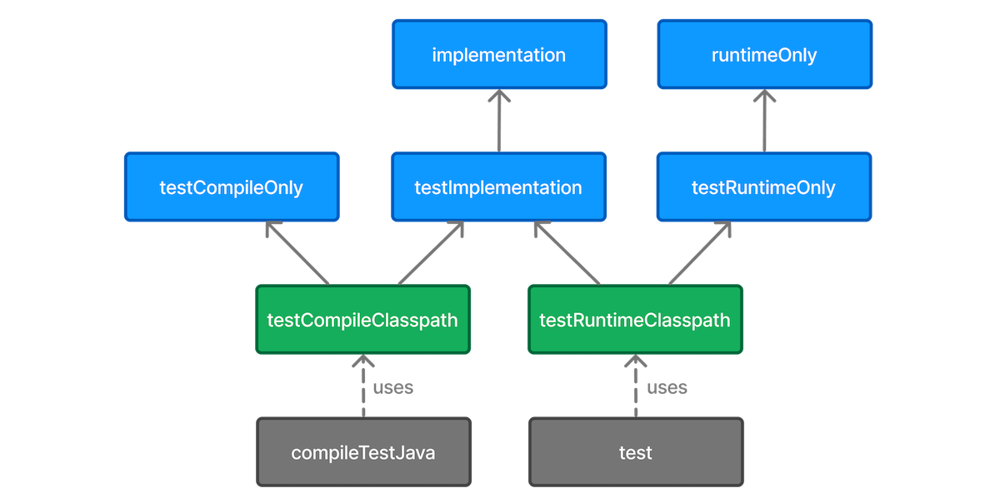
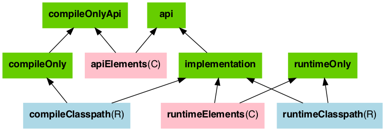
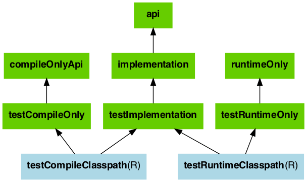

// Assembling a JAR for a source set tasks.register('intTestJar', Jar) { // 这种 sourceSet 的 output 在 java 对象实现里是一些 file collection from sourceSets.intTest.output }
// Generating the Javadoc for a source set tasks.register('intTestJavadoc', Javadoc) { source sourceSets.intTest.allJava classpath = sourceSets.intTest.compileClasspath }
// 这是配置集成测试的方法之一 // Running tests in a source set tasks.register('intTest', Test) { testClassesDirs = sourceSets.intTest.output.classesDirs classpath = sourceSets.intTest.runtimeClasspath }
这个 plugin 会带来一些依赖配置（dependency configuration）：


不同的 dependency 会在不同的 source set 的不同的 phase-compile、implementation、runtime 三重 scope 可见（The compile and runtime configurations have been removed with Gradle 7.0. Please refer to the upgrade guide how to migrate to implementation and api configurations`.）。这是一个 visible 问题。
对于 building 一个 java project 而言，最重要的插件是 java library 而不是 java。它会提供如下任务：
A compileJava task that compiles all the Java source files under src/main/java
A compileTestJava task for source files under src/test/java
A test task that runs the tests from src/test/java
A jar task that packages the main compiled classes and resources from src/main/resources into a single JAR named -.jar
A javadoc task that generates Javadoc for the main classes
管理 api exposed to consumer。
A library is a Java component meant to be consumed by other components. It’s a very common use case in multi-project builds, but also as soon as you have external dependencies.
// The following types can appear anywhere in the code // but say nothing about API or implementation usage import org.apache.commons.lang3.exception.ExceptionUtils; import org.apache.http.HttpEntity; import org.apache.http.HttpResponse; import org.apache.http.HttpStatus; import org.apache.http.client.HttpClient; import org.apache.http.client.methods.HttpGet;
// HttpClient is used as a parameter of a public method // so "leaks" into the public API of this component publicHttpClientWrapper(HttpClient client) { this.client = client; }
// public methods belongs to your API publicbyte[] doRawGet(String url) { HttpGetrequest=newHttpGet(url); try { HttpEntityentity= doGet(request); ByteArrayOutputStreambaos=newByteArrayOutputStream(); entity.writeTo(baos); return baos.toByteArray(); } catch (Exception e) { ExceptionUtils.rethrow(e); // this dependency is internal only } finally { request.releaseConnection(); } returnnull; }
// HttpGet and HttpEntity are used in a private method, so they don't belong to the API private HttpEntity doGet(HttpGet get)throws Exception { HttpResponseresponse= client.execute(get); if (response.getStatusLine().getStatusCode() != HttpStatus.SC_OK) { System.err.println("Method failed: " + response.getStatusLine()); } return response.getEntity(); } }
这个模块要暴露的 api 仍然要暴露签名中的 httpclient 相关的类库给消费者，但不需要暴露内部的 ExceptionUtils 的应用。所以合理的 gradle 配置如下：
1 2 3 4
dependencies { api 'org.apache.httpcomponents:httpclient:4.5.7' implementation 'org.apache.commons:commons-lang3:3.5' }
module org.gradle.sample { requires com.google.gson; // real module requires org.apache.commons.lang3; // automatic module // commons-cli-1.4.jar is not a module and cannot be required }
这个插件在两类 source set 视角下，进行 configuration set up 的 graph 如下：


CLI 接口
常用命令
1 2 3 4 5 6 7 8 9
# 修复某些 spring 的构建 gradle objenesisRepackJar gradle cglibRepackJar
# 基于 gradlew 构建 ./gradlew clean build -x test
# 列出依赖树 gradle dependencies
测试管理
自带的 test source set 是为了单元测试用的。如果为了审美（aesthetics）和可管理 （manageability），就需要 separate one from another。
//以集合的each方法为例，接受的参数就是一个闭包 numList.each({println it}) //省略传参的括号，并调整格式，有以下常见形式 numList.each{ println it }
// 不是一定要定义成员变量才能作为类属性被访问，用get/set方法也能当作类属性 task helloJavaBean<<{ Person p = new Person() p.name = "张三" println "名字是: ${p.name}"//输出类属性name，为张三 println "年龄是: ${p.age}"//输出类属性age，为12 } class Person{ private String name public int getAge(){//省略return 12 } }